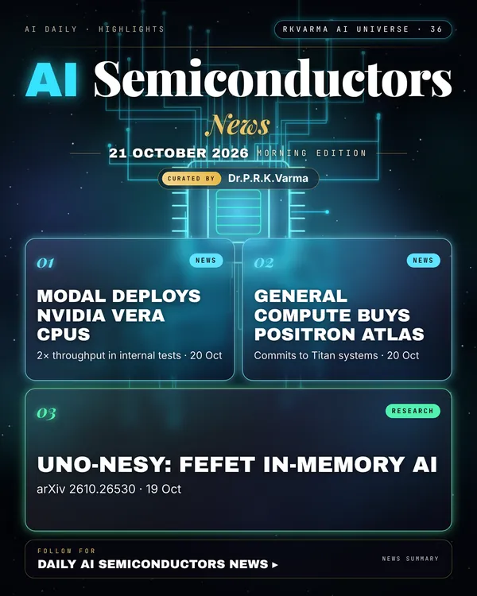

Latest updates · 21 October 2026
In the full issue →New AI hardware is landing with real customers: cloud start-up Modal has deployed NVIDIA's Vera CPUs after internal tests showed about twice the throughput, and General Compute is buying Positron AI's inference systems.
Research, industry & policy
- NVIDIA Vera CPU deployed at AI start-up Modal, Tom's Hardware · 20 Oct 2026: Modal runs Vera alongside its existing x86 fleet after internal testing showed 2× throughput compared with AMD and Intel processors.
- Positron AI and General Compute partner on memory-first inference, Positron AI via PR Newswire · 20 Oct 2026: General Compute will purchase Positron's Atlas inference systems and has committed to buying its next-generation Titan systems.
Journals & preprints
- UnO-NeSy: Optimizing Neuro-Symbolic Computing with Unified FeFET Based In-Memory System, arXiv 2610.26530 · 19 Oct 2026: Neuro-symbolic artificial intelligence (NeSy AI) combines neural perception with symbolic reasoning, enabling logical reasoning.
Why it matters
Inference, not training, is driving new chip choices, and CPUs and memory-first designs are winning a share of that work.

